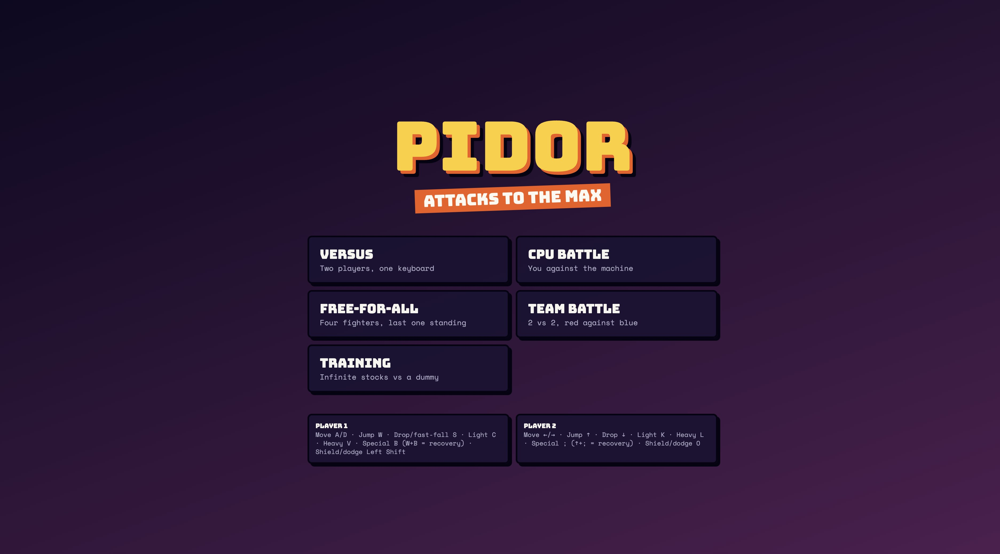
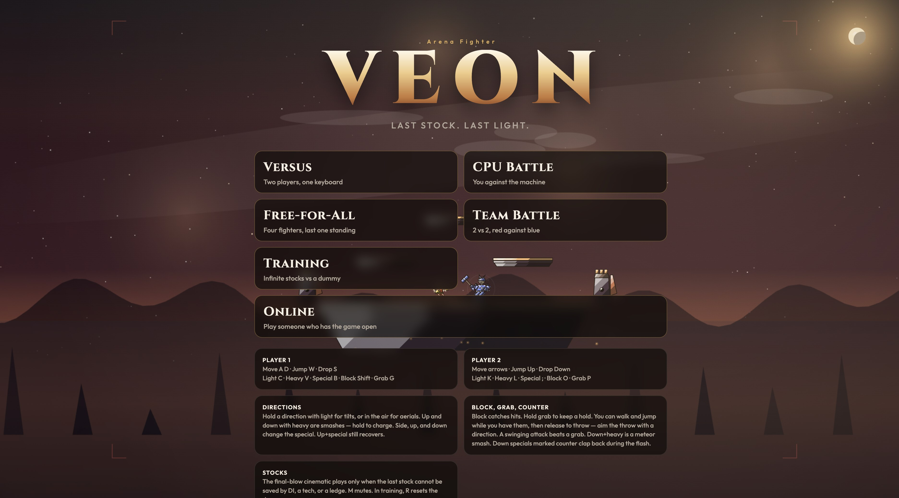
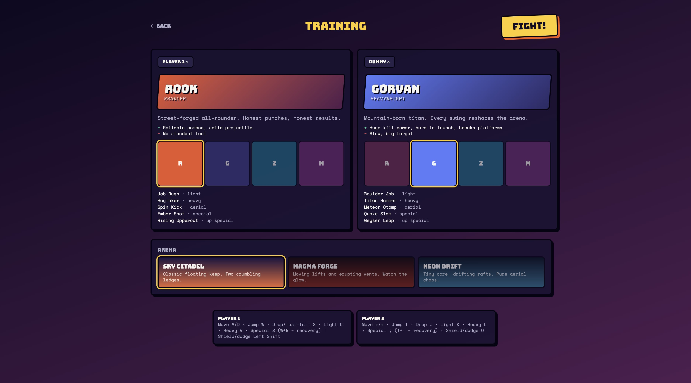
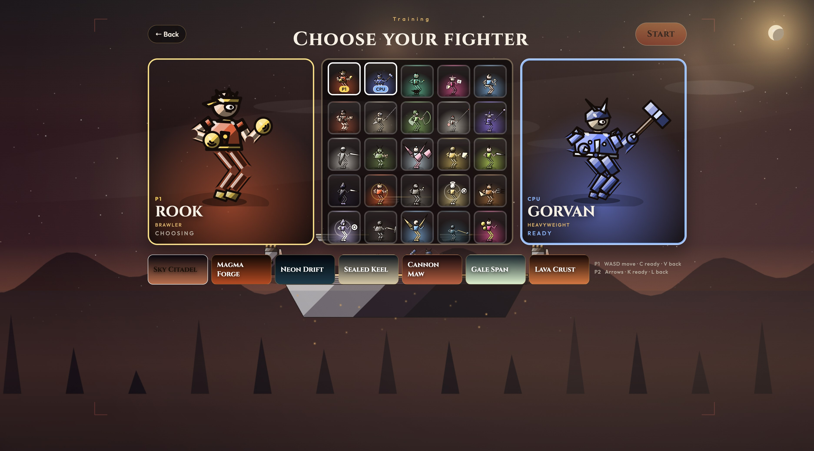
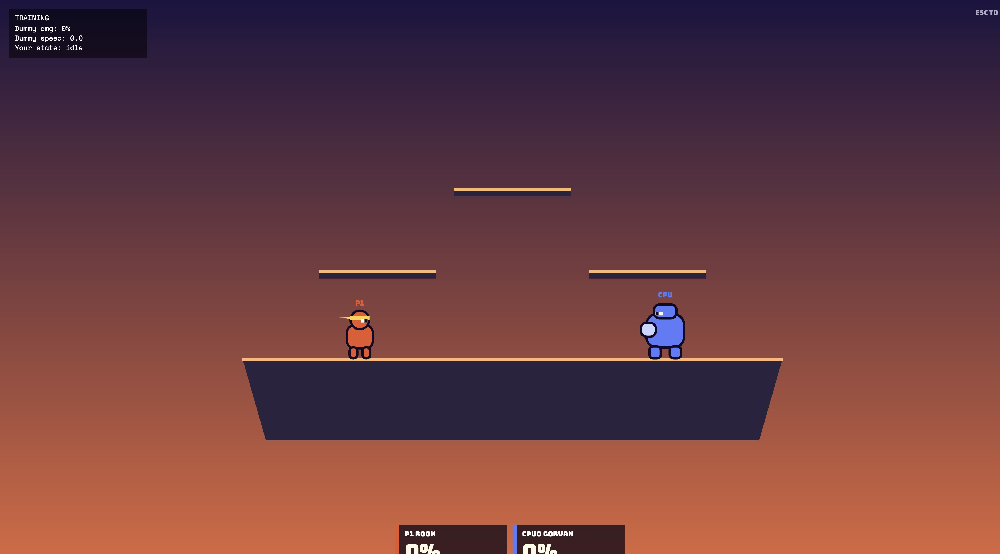
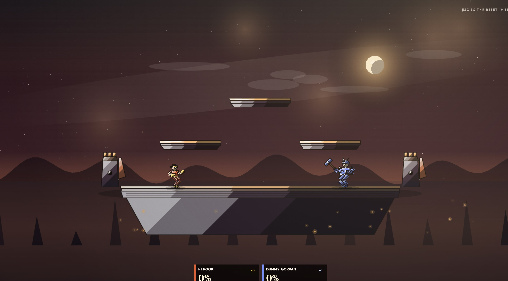
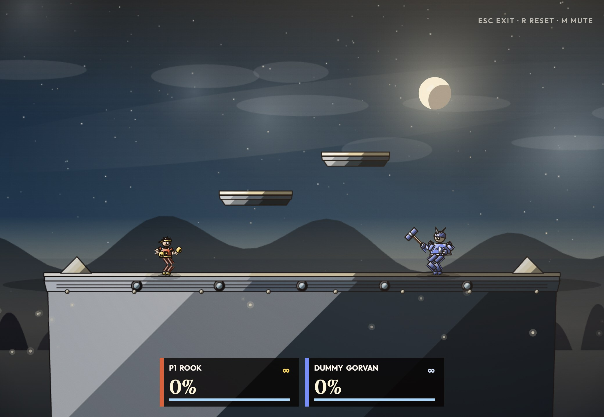
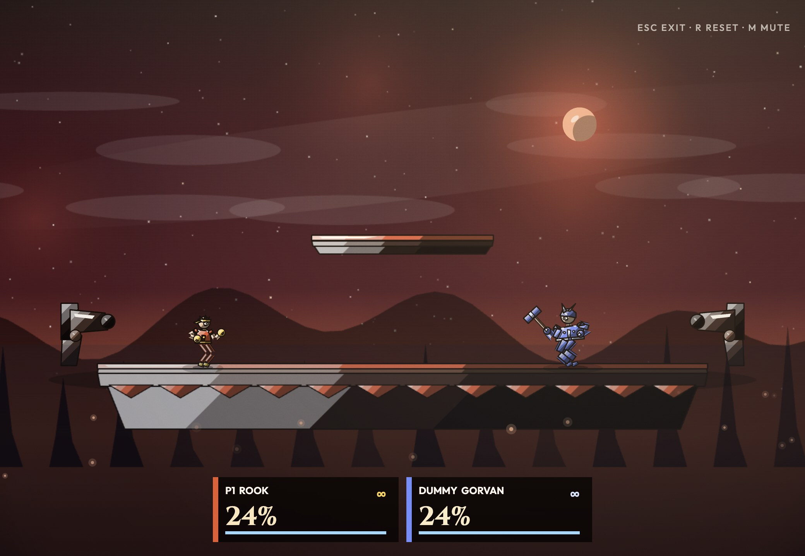
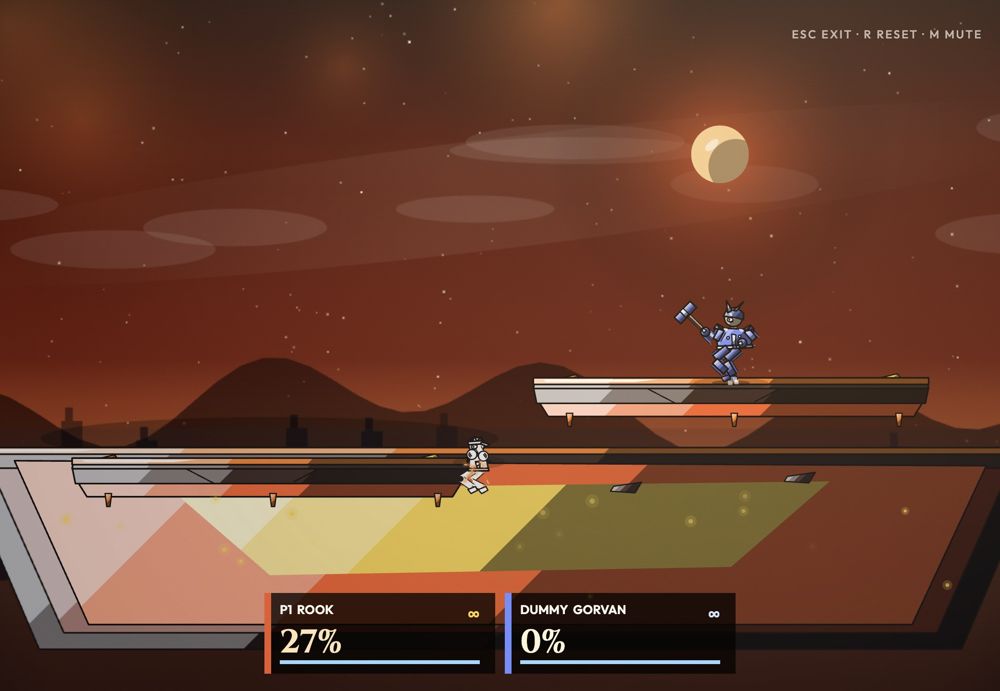
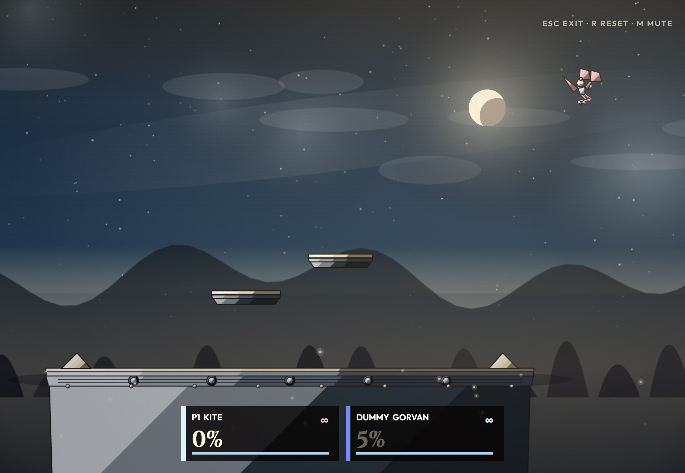

Captured 28 Oct 2026
The same local-keyboard fighter, rebuilt. The slides put the original Attacks to the Max next to Veon: the menu, the roster, the match, the stages, and a real clip of a training round.










What a match contains now
One player. A and D, or the arrow keys, move. W or Up jumps. S or Down drops. C light, V heavy, B special. Shift blocks. G grabs. Up with B recovers.
Matches. There is no second player on this keyboard. A friend joins through Online. Escape pauses. In training, escape leaves and R resets the dummy. M mutes.
Hold a direction with light for a tilt, or in the air for an aerial. Up or down with heavy is a smash. Back on the title screen to play.